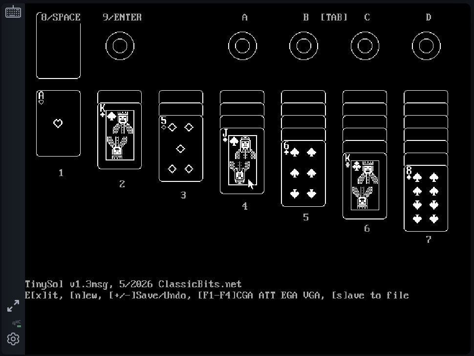

TinySol
DOS → WASMKlondike solitaire as a hand-assembled 3.5 KB 8086 DOS program, running in the browser through js-dos. Every load picks a fresh winnable deal from 640 saved games.

Play TinySol ↗~/home
Code, tools, and experiments.
Klondike solitaire as a hand-assembled 3.5 KB 8086 DOS program, running in the browser through js-dos. Every load picks a fresh winnable deal from 640 saved games.

Play TinySol ↗Controlled skill optimization for Hermes Agent — derives from Microsoft Research's SkillOpt: 52/52 settings improved through text-space optimization with validation gates.